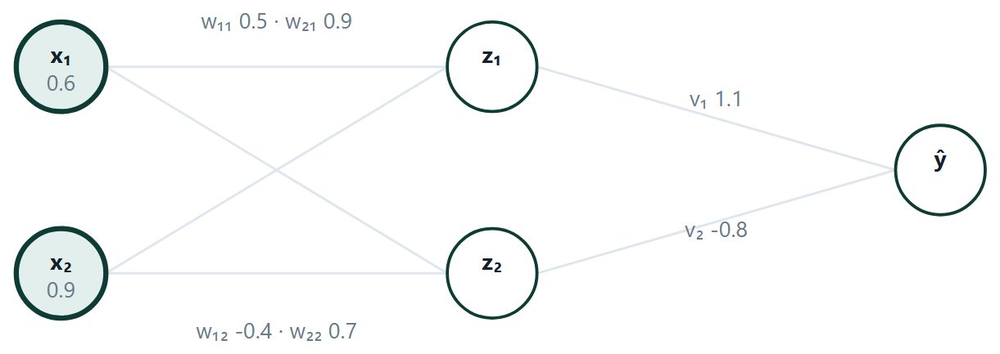
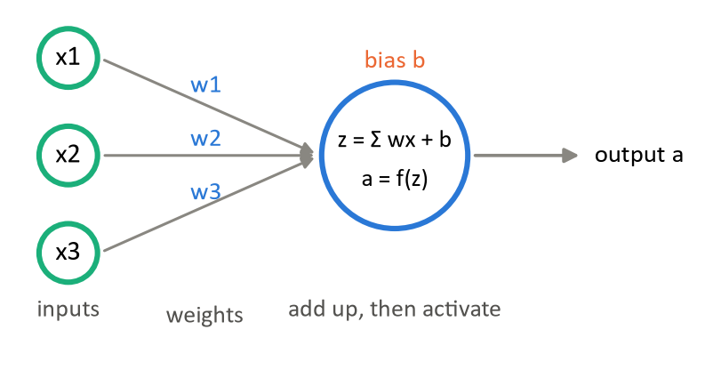
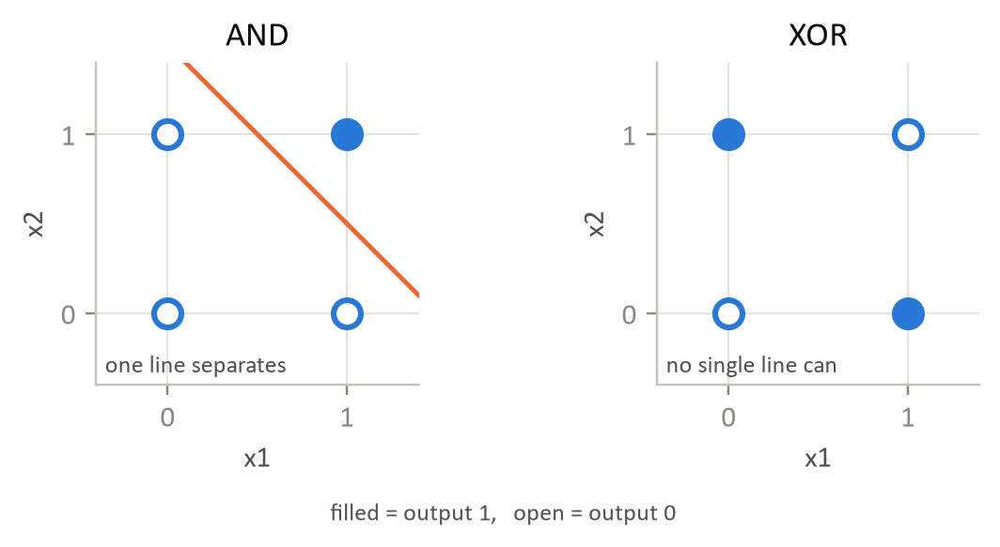
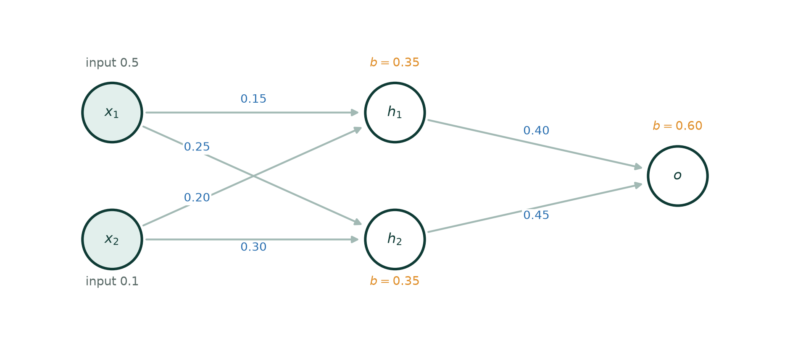
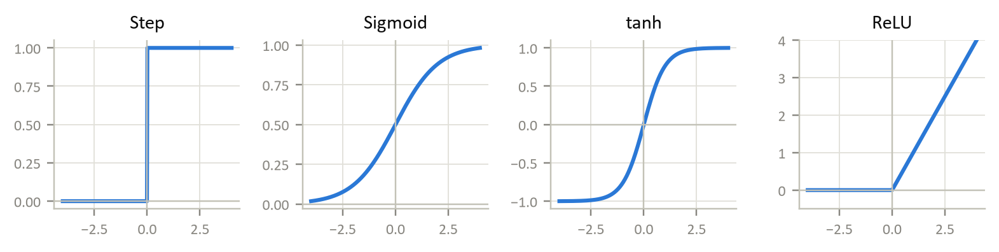

Chapter 10: Perceptrons, Multilayer Networks and Back-propagation¶
A logistic regression with a threshold is already a very small neural network: one neuron. This chapter starts from that neuron in its original form, the perceptron, shows what a single neuron can and cannot learn, and then stacks neurons into layers. The multilayer perceptron can represent curved boundaries, and the back-propagation algorithm is what makes it trainable: it computes the gradient of the loss with respect to every weight in a single backward pass.
10.1 The perceptron¶
Rosenblatt's 1958 model is the ancestor of every neural network. One unit takes a weighted sum of its inputs and fires if the sum crosses a threshold.
the bias \(b\) is the negative of the firing threshold
Definition: The perceptron update
For each example in turn: \(w\) := \(w + \eta (y - \hat{y})x\) and \(b\) := \(b + \eta (y - \hat{y})\).
If the prediction is correct, \(y - \hat{y} = 0\) and nothing changes. The perceptron learns only from its mistakes.
The rule's shape is not arbitrary. Suppose the true label was 1 and the unit answered 0. Adding \(x\) to \(w\) makes the new score for this same example larger by \(\eta (\Vert x\Vert ^{2} + 1)\), so the boundary has moved towards classifying it correctly. If the error is the other way, it subtracts, and the score falls.
Convergence theorem, and its limit
If the training data is linearly separable, the perceptron rule converges to a separating boundary in a finite number of updates, whatever the initial weights. If it is not separable, the rule never terminates and simply oscillates. It has no concept of “as good as possible” — which is precisely the gap that logistic regression (a differentiable loss with a real minimum) and the SVM (maximise the margin) each close in their own way.
XOR, and the winter it caused
A single perceptron computes AND and OR without difficulty, because each has a straight line separating its true and false cases. XOR does not: its true cases sit at opposite corners of a square. Minsky and Papert's 1969 book made this point precisely, funding collapsed, and neural network research stalled for over a decade. The resolution — a hidden layer — was known in principle but had no practical training algorithm until back-propagation was popularised in 1986.
10.2 Multilayer perceptrons and back-propagation¶
Stack the units. An input layer, one or more hidden layers, an output layer; each unit computes a weighted sum and passes it through a non-linear activation.
Why the non-linearity is not optional
A linear function of a linear function is linear. Without an activation, a hundred-layer network computes exactly what one layer computes, and the whole enterprise collapses into a single matrix. The squashing step is what makes depth mean anything.
Definition: Back-propagation
Forward: compute every \(z\) and a from input to output, then the loss.
Backward: compute \(\delta\) at the output, \(\delta = (\hat{y} - y)\cdot \sigma '(z)\), then pass it back layer by layer with \(\delta _{j} = (\sum _{k} \delta _{k}w_{\text{jk}})\cdot \sigma '(z_{j})\).
Update: every weight gradient has the same form — \(\delta\) at the far end times the activation at the near end — and each weight takes a gradient-descent step.
There is no new mathematics here: back-propagation is the chain rule, organised so that quantities computed for one layer are reused by the next, which is what makes it O(number of weights) rather than hopeless.

| Activation | Formula | Derivative | Comment |
|---|---|---|---|
| Sigmoid | \(1/(1+e^{-z})\) | \(\sigma (1-\sigma )\), max 0.25 | historically standard; saturates and kills gradients |
| tanh | \((e^{z}-e^{-z})/(e^{z}+e^{-z})\) | \(1 - \tanh^{2}\), max 1 | zero-centred, so usually better than sigmoid |
| ReLU | \(\max(0\), z) | 1 for \(z > 0\), else 0 | the modern default in hidden layers; no saturation for positive inputs |
| Softmax | \(e^{\text{zi}}/\sum e^{\text{zj}}\) | — | output layer for multi-class; the outputs sum to 1 |
Vanishing gradients, in one line of arithmetic
\(\sigma ' \le 0.25\) everywhere. Each layer the error signal passes through multiplies it by at most a quarter, so ten layers scale it by \(0.25^{10} \approx 10^{-6}\) and the early layers stop learning altogether. ReLU has derivative exactly 1 wherever it is active, so nothing shrinks — which is the single change that made deep networks trainable.
The universal approximation theorem
says a network with one hidden layer and enough units can approximate any continuous function to any accuracy. It is an existence result and nothing more: it does not say how many units, it does not say the weights can be found, and it does not say the result will generalise. Depth in practice buys efficiency — deep networks represent many functions with far fewer units than a shallow one would need.
# a multilayer perceptron — and the one line that decides whether it works
from sklearn.neural_network import MLPClassifier
net = make_pipeline(
StandardScaler(), # leave this out and it will not converge
MLPClassifier(hidden_layer_sizes=(16,), activation="relu",
max_iter=2000, random_state=42)).fit(X_tr, y_tr)
print("layers", [c.shape for c in net[-1].coefs_]) # the weight matrices
print("iterations", net[-1].n_iter_, "final loss", net[-1].loss_)
Example 10.1: Deriving the back-propagation rule
Problem. Why is every weight gradient \(“\delta\) at the far end times the activation at the near end”, and why does \(\delta\) travel backwards through the same weights it travelled forwards through?
Step 1 — name the quantities
For unit \(j\) in some layer: \(z_{j} = \sum _{i} w_{\text{ij}}a_{i} + b_{j}\) and \(a_{j} = f(z_{j})\), where the \(a_{i}\) are the activations arriving from the layer before. Define \(\delta _{j} = \partial L/\partial z_{j}\) — the sensitivity of the loss to that unit's input. Everything follows from this one definition.
Step 2 — the gradient for a weight
\(w_{\text{ij}}\) influences the loss only through \(z_{j}\), so the chain rule gives one factor:
\(\partial L/\partial w_{\text{ij}} = (\partial L/\partial z_{j})(\partial z_{j}/\partial w_{\text{ij}}) = \delta _{j} \cdot a_{i}\)
because \(z_{j}\) is linear in \(w_{\text{ij}}\) with coefficient \(a_{i}\). That is the rule: \(\delta\) at the far end, activation at the near end. Likewise \(\partial L/\partial b_{j} = \delta _{j}\), since the bias has coefficient 1.
Step 3 — \(\delta\) at the output
With the squared-error loss \(L = \tfrac{1}{2}(a_{\text{out}} - y)^{2}\):
\(\delta _{\text{out}} = \partial L/\partial z_{\text{out}} = (a_{\text{out}} - y) \cdot f'(z_{\text{out}})\)
For a sigmoid output that is \((\hat{y} - y)\cdot \hat{y}(1 - \hat{y})\), using the identity derived above.
Step 4 — \(\delta\) for a hidden unit
A hidden unit \(j\) affects the loss only through the units \(k\) it feeds, so the chain rule sums over all of them:
\(\delta _{j} = \sum _{k} (\partial L/\partial z_{k})(\partial z_{k}/\partial a_{j})(\partial a_{j}/\partial z_{j}) = (\sum _{k} \delta _{k} w_{\text{jk}}) \cdot f'(z_{j})\)
Read it: each downstream unit sends back its own \(\delta\), weighted by the very connection through which this unit influenced it. A unit that mattered a lot to a badly wrong output is charged a lot. That is the entire idea — the rest is bookkeeping.
Step 5 — why this is efficient
Computing each \(\partial L/\partial w\) separately would repeat the same partial products thousands of times. Back-propagation stores \(\delta\) once per unit and reuses it for every weight into that unit, which makes the whole gradient cost about the same as one forward pass — O(number of weights) rather than \(O(\text{weights}^{2})\). That is why the algorithm mattered enough to restart the field in 1986.
Answer. \(\partial L/\partial w_{\text{ij}} = \delta _{j}a_{i}\), with \(\delta _{\text{out}} = (\hat{y} - y)f'(z_{\text{out}})\) and \(\delta _{j} = (\sum _{k} \delta _{k}w_{\text{jk}})f'(z_{j})\)
Comment. Now the vanishing gradient is visible in the algebra rather than asserted: every backward step multiplies by another f′, and for the sigmoid f′ \(\le 0.25\), so ten layers scale \(\delta\) by at most \(0.25^{10} \approx 10^{-6}\). ReLU has f′ \(= 1\) wherever it is active, so nothing shrinks.
Counting the parameters¶
“How many trainable parameters does this network have?” is a standard exam question, and it is arithmetic once the rule is stated. A fully connected layer with \(n\) inputs and \(k\) units holds nk weights and \(k\) biases. Input units hold nothing: they are values, not parameters.
Example 10.2: Two parameter counts
Problem. (a) A network with 10 inputs, a hidden layer of 8, a second hidden layer of 6 and an output layer of 3, all with biases. (b) A network with 3 inputs, one hidden layer of 2 and 1 output, all with biases.
(a) Layer by layer
| Connection | Weights | Biases | Subtotal |
|---|---|---|---|
| \(10 \to 8\) | \(10 \times 8 = 80\) | 8 | 88 |
| \(8 \to 6\) | \(8 \times 6 = 48\) | 6 | 54 |
| \(6 \to 3\) | \(6 \times 3 = 18\) | 3 | 21 |
| Total | 146 | 17 | 163 |
\((b)\) The small one
\(3 \times 2 + 2 = 8\), then \(2 \times 1 + 1 = 3\). Total 11.
The check worth doing
The bias count is simply the total number of non-input neurons — \(8 + 6 + 3 = 17\) in (a), and \(2 + 1 = 3\) in \((b)\). If your bias count does not match that, you have either counted the input layer or missed a layer.
Answer. (a) 163 parameters; (b) 11 parameters
Why the number matters
It is the dimension of the space gradient descent is searching, and a rough guide to capacity: a network with more parameters than training rows can memorise the training set outright. The usual first response to a large train–test gap is to make this number smaller.
10.3 Further topics¶
Choosing the loss at the output¶
The derivation of back-propagation in this chapter used the squared error, which makes the output delta \(\delta = (\hat{y} - y)\,\hat{y}(1 - \hat{y})\). For classification this is rarely the best choice. If the output unit is a sigmoid and the loss is the binary cross-entropy of the logistic regression chapter, the slope factor \(\hat{y}(1 - \hat{y})\) cancels and the output delta becomes simply
the same "prediction minus truth" that appeared in logistic regression and in softmax regression. With several classes, a softmax output layer and categorical cross-entropy give \(\delta_k = \hat{y}_k - y_k\) for each output unit. The practical advantage is that the delta is large exactly when the network is badly wrong, even if the unit is saturated; with squared error a confidently wrong sigmoid unit has a tiny slope and learns very slowly. The rule of thumb: sigmoid or softmax output with cross-entropy for classification, a linear output with squared error for regression. Everything behind the output layer, the backward pass through the hidden layers, is unchanged.
Training a network in practice¶
The worked examples update the weights once, on one example. A real run repeats this many times, and several practical decisions surround the loop.
Epochs and mini-batches. One pass over the whole training set is an epoch. Updating after every single example (stochastic gradient descent) is noisy; updating only after the full pass (batch gradient descent) is slow per update and memory-hungry. The usual compromise is the mini-batch: shuffle the data, split it into groups of \(B\) examples (commonly 32 to 256), average the gradient over each group, and update after every group. With \(m = 1000\) examples and \(B = 50\) there are \(1000/50 = 20\) updates per epoch. The noise in the mini-batch gradient is not only tolerated but useful, since it helps the search leave shallow dips.
Initialisation. Starting every weight at the same value, zero included, is fatal. All hidden units of a layer would compute the same output, receive the same delta and be updated identically, so they would stay identical forever and the layer would behave like a single unit. The weights are therefore started at small random values, which breaks the symmetry, and the inputs are scaled to comparable ranges so that no unit begins saturated.
The learning rate is the most important setting. If it is too small the loss falls smoothly but so slowly that training stalls long before the minimum. If it is too large, each step overshoots the valley, the loss zig-zags and may climb without limit. A value that gives a fast, smooth decay flattening near the bottom is the target, and it is found by trying a few values spaced by factors of about three or ten and watching the loss curve, exactly as in the gradient descent chapter of Unit 3.
Controlling overfitting in networks¶
A network has far more parameters than a linear model, so it can memorise a training set. The training loss keeps falling while the loss on held-out data first falls and then rises. Four defences are standard.
- Early stopping. Track the loss on a validation set after each epoch and stop when it starts to rise, keeping the weights from the best epoch.
- L2 weight decay. Add \(\frac{\lambda}{2}\sum w^{2}\) to the loss. Every update then also shrinks each weight slightly towards zero, which favours smoother functions, exactly as in ridge regression.
- Dropout. At each training step, switch off a random fraction of the hidden units (say half) and train the remaining network. No unit can then depend on a particular partner, so each has to learn a feature that is useful on its own. At test time all units are used, with their outputs scaled so that the expected input to the next layer is unchanged, and the result behaves like an average over many thinned networks, which lowers variance.
- Data augmentation. Enlarge the training set with label-preserving changes to the inputs, such as flips, small shifts or added noise for images, so that the network sees more variety than the raw data hold.
These are the same bias-variance dials as elsewhere in the unit: weight decay strength, the fraction dropped and the stopping epoch all trade a little extra training error for a larger gain in generalisation.
10.4 Worked examples¶
The examples below work through the calculations of this chapter in full. Try each one on paper before reading the steps.
Example 10.3: Why the perceptron cannot learn XOR
Problem. Show that no single perceptron computes XOR, and give a two-unit hidden layer that does.
Step 1 — write down what would be required
XOR: \((0,0)\to 0, (0,1)\to 1, (1,0)\to 1, (1,1)\to 0\). A perceptron fires when \(w_{1}x_{1} + w_{2}x_{2} + b \ge 0\), so we need
(0,0): \(b < 0 \cdot (0,1): w_{2} + b \ge 0 \cdot (1,0): w_{1} + b \ge 0 \cdot (1,1): w_{1} + w_{2} + b < 0\)
Step 2 — derive the contradiction
From the second and third, \(w_{1} \ge\) −b and \(w_{2} \ge\) −b, so \(w_{1} + w_{2} \ge\) −2b.
The fourth requires \(w_{1} + w_{2} <\) −b.
Together: −2b \(\le w_{1} + w_{2} <\) −b, which needs −2b \(<\) −b, i.e. \(b > 0\). But the first condition says \(b < 0\). Contradiction, so no weights exist.
Geometrically: the two positive cases sit at opposite corners of the unit square, with the negatives at the other two. No straight line separates one diagonal pair from the other.
Step 3 — build it from two units
Note that XOR \(=\) OR AND NOT(AND). Both OR and AND are linearly separable, so use one hidden unit for each:
\(h_{1} = \text{step}(x_{1} + x_{2} - 0.5)\) — this is OR
\(h_{2} = \text{step}(x_{1} + x_{2} - 1.5)\) — this is AND
output \(= \text{step}(h_{1} - h_{2} - 0.5)\) — fires when OR is true and AND is not
Check \((1,1): h_{1} = 1, h_{2} = 1\), output \(=\) step(1 \(- 1 - 0.5) =\) step(−0.5) \(= 0\) ✓. Check \((0,1): h_{1} = 1, h_{2} = 0\), output \(=\) step(0.5) \(= 1\) ✓.
Answer. No single perceptron can do it — the four constraints are inconsistent. Two hidden units computing OR and AND, combined as OR \(-\) AND, solve it.
Comment. This is the whole argument for hidden layers in miniature. The hidden units transform the input into a new space — here, (OR, AND) coordinates — in which the problem is linearly separable. A trained network discovers such a transformation for itself instead of being handed one.
Example 10.4: One neuron under four activations
Problem. A neuron has inputs \(x_1 = 0.5\), \(x_2 = 0.8\), weights \(w_1 = -0.2\), \(w_2 = 0.5\) and bias \(b = -0.1\). Find the weighted sum \(z\), and the output under the step, sigmoid, tanh and ReLU activations. With a sigmoid, the output class is 1 if \(\sigma(z) \ge 0.5\).

Step 1 — the weighted sum
\(z = (-0.2)(0.5) + (0.5)(0.8) + (-0.1) = -0.10 + 0.40 - 0.10 = 0.20\)
Step 2 — apply each activation to \(z = 0.2\)
| Activation | Working | Output |
|---|---|---|
| Step | \(z = 0.2 \ge 0\) | \(1\) |
| Sigmoid | \(1/(1 + e^{-0.2}) = 1/(1 + 0.8187)\) | \(0.5498\) |
| tanh | \(\tanh(0.2)\) | \(0.1974\) |
| ReLU | \(\max(0, 0.2)\) | \(0.2\) |
Step 3 — the class
\(\sigma(0.2) = 0.5498 \ge 0.5\), so the sigmoid neuron outputs class 1; the step neuron agrees.
Answer. \(z = 0.2\); step \(1\), sigmoid \(0.5498\), tanh \(0.1974\), ReLU \(0.2\); class 1.
Comment. Every unit in every network of this chapter does exactly this: multiply, add, activate. With a sigmoid the neuron is a logistic regression, and with a step it is a perceptron. Only the last step differs.
Example 10.5: A perceptron learns the AND gate
Problem. Train a single perceptron to compute AND: \((0,0) \to 0\), \((0,1) \to 0\), \((1,0) \to 0\), \((1,1) \to 1\). Start from \(w_1 = 0.3\), \(w_2 = 0.3\), \(b = -0.15\), with \(\eta = 0.1\) and step activation (output 1 if \(z \ge 0\)). Present the rows in the order given and stop when a whole pass makes no error.
Rule. For each row: \(z = w_1x_1 + w_2x_2 + b\), \(o = \text{step}(z)\), \(e = t - o\); then \(w_i \leftarrow w_i + \eta e x_i\) and \(b \leftarrow b + \eta e\). If \(e = 0\) nothing changes.
Step 1 — epoch 1, row by row
Row \((0,0)\), target 0: \(z = -0.15 < 0\), so \(o = 0\), \(e = 0\). No change.
Row \((0,1)\), target 0: \(z = 0.3(0) + 0.3(1) - 0.15 = 0.15 \ge 0\), so \(o = 1\) and \(e = 0 - 1 = -1\). Update: \(w_1 = 0.3 + 0.1(-1)(0) = 0.3\), \(w_2 = 0.3 + 0.1(-1)(1) = 0.2\), \(b = -0.15 + 0.1(-1) = -0.25\).
Row \((1,0)\), target 0, with the updated weights: \(z = 0.3(1) + 0.2(0) - 0.25 = 0.05 \ge 0\), so \(o = 1\) and \(e = -1\). Update: \(w_1 = 0.3 - 0.1 = 0.2\), \(w_2 = 0.2\), \(b = -0.25 - 0.1 = -0.35\).
Row \((1,1)\), target 1: \(z = 0.2 + 0.2 - 0.35 = 0.05 \ge 0\), so \(o = 1 = t\). No change.
Step 2 — epoch 2, a check pass with \(w = (0.2, 0.2)\), \(b = -0.35\)
| \(x_1\) | \(x_2\) | \(z = 0.2x_1 + 0.2x_2 - 0.35\) | \(o\) | \(t\) | Error |
|---|---|---|---|---|---|
| 0 | 0 | \(-0.35\) | 0 | 0 | 0 |
| 0 | 1 | \(-0.15\) | 0 | 0 | 0 |
| 1 | 0 | \(-0.15\) | 0 | 0 | 0 |
| 1 | 1 | \(+0.05\) | 1 | 1 | 0 |
No errors, so training has converged.
Answer. \(w_1 = 0.2\), \(w_2 = 0.2\), \(b = -0.35\), after two corrections in the first epoch. The unit fires when \(0.2x_1 + 0.2x_2 \ge 0.35\), that is \(x_1 + x_2 \ge 1.75\), which only \((1,1)\) satisfies.

Comment. The perceptron changed its weights only twice, both times on a row it got wrong. Training it on XOR instead would never converge, for the reason in the figure.
Example 10.6: A forward pass through a 2–2–1 network
Problem. A network has two inputs, a hidden layer of two sigmoid neurons and one sigmoid output neuron. The inputs are \(x_1 = 0.5\), \(x_2 = 0.1\). Hidden neuron \(h_1\) has weights \((0.15, 0.20)\) and bias \(0.35\); \(h_2\) has weights \((0.25, 0.30)\) and bias \(0.35\); the output neuron has weights \((0.40, 0.45)\) from \((h_1, h_2)\) and bias \(0.60\). Compute the network's output.

Step 1 — hidden neuron \(h_1\)
\(\text{net}_{h_1} = 0.15(0.5) + 0.20(0.1) + 0.35 = 0.075 + 0.020 + 0.35 = 0.445\)
\(h_1 = \sigma(0.445) = 1/(1 + e^{-0.445}) = 1/(1 + 0.6408) = 0.6094\)
Step 2 — hidden neuron \(h_2\)
\(\text{net}_{h_2} = 0.25(0.5) + 0.30(0.1) + 0.35 = 0.125 + 0.030 + 0.35 = 0.505\)
\(h_2 = \sigma(0.505) = 1/(1 + 0.6035) = 0.6236\)
Step 3 — the output neuron
The hidden outputs now act as its inputs:
\(\text{net}_o = 0.40(0.6094) + 0.45(0.6236) + 0.60 = 0.2438 + 0.2806 + 0.60 = 1.1244\)
\(o = \sigma(1.1244) = 1/(1 + e^{-1.1244}) = 1/(1 + 0.3248) = 0.7548\)
Answer. \(h_1 = 0.6094\), \(h_2 = 0.6236\), output \(= 0.7548\); as a classifier with threshold 0.5, class 1 with 75.5% confidence.
Comment. Each hidden neuron is a logistic regression on the raw inputs, and the output neuron is a logistic regression on their answers. The next example trains this very network.
Example 10.7: One full back-propagation step
Problem. Take the network of the previous example, with target \(y = 1\), squared error \(E = \tfrac{1}{2}(y - o)^2\) and learning rate \(\alpha = 0.5\). Update all nine parameters once, and verify that the error falls.
Step 1 — forward pass and starting error
From the previous example, \(h_1 = 0.6094\), \(h_2 = 0.6236\), \(o = 0.7548\). Then \(E = \tfrac{1}{2}(1 - 0.7548)^2 = \tfrac{1}{2}(0.2452)^2 = 0.03006\).
Step 2 — the output delta
\(o - y = -0.2452\) and \(o(1 - o) = 0.7548 \times 0.2452 = 0.18507\), so
\(\delta_o = (o - y)\,o(1 - o) = (-0.2452)(0.18507) = -0.04538\)
Step 3 — gradients of the output layer
Each gradient is \(\delta_o\) times the signal that travelled along that connection:
\(\partial E/\partial v_1 = \delta_o h_1 = (-0.04538)(0.6094) = -0.02766\)
\(\partial E/\partial v_2 = \delta_o h_2 = (-0.04538)(0.6236) = -0.02830\)
\(\partial E/\partial b_3 = \delta_o = -0.04538\)
Step 4 — send the blame back, using the old weights
Each hidden delta is \(\delta_o\), times the weight on the connection to the output, times the hidden neuron's own slope \(h(1 - h)\).
\(h_1(1 - h_1) = 0.6094 \times 0.3906 = 0.23802\), so \(\delta_{h_1} = (-0.04538)(0.40)(0.23802) = -0.004320\)
\(h_2(1 - h_2) = 0.6236 \times 0.3764 = 0.23472\), so \(\delta_{h_2} = (-0.04538)(0.45)(0.23472) = -0.004793\)
The hidden deltas are about ten times smaller than \(\delta_o\) after a single layer.
Step 5 — gradients of the hidden layer (delta times input, with \(x_1 = 0.5\), \(x_2 = 0.1\))
| Parameter | Gradient | Value |
|---|---|---|
| \(w_{11}\) | \(\delta_{h_1}x_1 = (-0.004320)(0.5)\) | \(-0.002160\) |
| \(w_{12}\) | \(\delta_{h_1}x_2 = (-0.004320)(0.1)\) | \(-0.000432\) |
| \(b_1\) | \(\delta_{h_1}\) | \(-0.004320\) |
| \(w_{21}\) | \(\delta_{h_2}x_1 = (-0.004793)(0.5)\) | \(-0.002396\) |
| \(w_{22}\) | \(\delta_{h_2}x_2 = (-0.004793)(0.1)\) | \(-0.000479\) |
| \(b_2\) | \(\delta_{h_2}\) | \(-0.004793\) |
Step 6 — update all nine, new \(=\) old \(- 0.5 \times\) gradient
| Parameter | Old | New |
|---|---|---|
| \(w_{11}\) | 0.1500 | 0.1511 |
| \(w_{12}\) | 0.2000 | 0.2002 |
| \(b_1\) | 0.3500 | 0.3522 |
| \(w_{21}\) | 0.2500 | 0.2512 |
| \(w_{22}\) | 0.3000 | 0.3002 |
| \(b_2\) | 0.3500 | 0.3524 |
| \(v_1\) | 0.4000 | 0.4138 |
| \(v_2\) | 0.4500 | 0.4642 |
| \(b_3\) | 0.6000 | 0.6227 |
Step 7 — forward pass with the new parameters
\(\text{net}_{h_1} = 0.1511(0.5) + 0.2002(0.1) + 0.3522 = 0.4478\), so \(h_1 = 0.6101\)
\(\text{net}_{h_2} = 0.2512(0.5) + 0.3002(0.1) + 0.3524 = 0.5080\), so \(h_2 = 0.6243\)
\(\text{net}_o = 0.4138(0.6101) + 0.4642(0.6243) + 0.6227 = 1.1650\), so \(o = 0.7622\)
\(E = \tfrac{1}{2}(1 - 0.7622)^2 = 0.02827\)
Answer. The output rises from \(0.7548\) to \(0.7622\) and the error falls from \(0.03006\) to \(0.02827\), a reduction of about 6%.
Comment. Look at how unequal the changes are: the output-layer weights \(v_1\) and \(v_2\) each moved by about 0.014, the hidden weights by as little as 0.0002. Layers near the output learn fast and layers near the input learn slowly, because the delta shrinks at every layer it passes through, and here the inputs themselves are small. This is the vanishing-gradient effect visible in a two-layer network. Note too that \(\delta_{h_1}\) used the old \(v_1 = 0.40\): compute all the deltas before changing any weight.
Example 10.8: Activation functions compared, and a ReLU network
Problem. Five neurons have net inputs \(z = -2, -0.5, 0, 1, 2\). (a) Compute the output of each under sigmoid, tanh, ReLU and Leaky ReLU (slope \(0.01\) for \(z \le 0\)). (b) Compute the sigmoid's slope \(o(1 - o)\) at each point. (c) A small network has input \(x = (1, -2)\), a ReLU hidden layer and a sigmoid output; hidden neuron \(h_1\) has weights \((0.5, 0.3)\) and bias \(0.2\), \(h_2\) has weights \((-0.4, 0.6)\) and bias \(0.1\), and the output has weights \((1.0, 2.0)\) from \((h_1, h_2)\) and bias \(-0.05\). Compute the output.

Step 1 — the outputs (part a)
| \(z\) | Sigmoid | tanh | ReLU | Leaky ReLU |
|---|---|---|---|---|
| \(-2\) | 0.1192 | \(-0.9640\) | 0 | \(-0.020\) |
| \(-0.5\) | 0.3775 | \(-0.4621\) | 0 | \(-0.005\) |
| 0 | 0.5000 | 0.0000 | 0 | 0.000 |
| 1 | 0.7311 | 0.7616 | 1 | 1.000 |
| 2 | 0.8808 | 0.9640 | 2 | 2.000 |
Step 2 — the sigmoid slope (part b)
| \(z\) | \(o\) | \(o(1 - o)\) |
|---|---|---|
| \(-2\) | 0.1192 | 0.1050 |
| \(-0.5\) | 0.3775 | 0.2350 |
| 0 | 0.5000 | 0.2500 |
| 1 | 0.7311 | 0.1966 |
| 2 | 0.8808 | 0.1050 |
The slope peaks at 0.25 at \(z = 0\) and falls towards zero on both sides.
Step 3 — the ReLU network (part c)
\(\text{net}_{h_1} = 0.5(1) + 0.3(-2) + 0.2 = 0.5 - 0.6 + 0.2 = 0.1\), so \(h_1 = \text{ReLU}(0.1) = 0.1\)
\(\text{net}_{h_2} = -0.4(1) + 0.6(-2) + 0.1 = -0.4 - 1.2 + 0.1 = -1.5\), so \(h_2 = \text{ReLU}(-1.5) = 0\)
\(\text{net}_o = 1.0(0.1) + 2.0(0) - 0.05 = 0.05\), so \(o = \sigma(0.05) = 1/(1 + 0.9512) = 0.5125\)
Answer. The tables above; the sigmoid slope never exceeds 0.25; the network outputs \(0.5125\), barely above 0.5, a very hesitant "class 1".
Comment. Two classic problems appear in this example. First, because the slope never exceeds 0.25, an error signal sent back through ten sigmoid layers is multiplied by at most \(0.25^{10} \approx 10^{-6}\), so the early layers stop learning; ReLU has slope exactly 1 for positive inputs, so it does not shrink the signal. Second, \(h_2\) output 0, and its ReLU slope there is also 0, so it receives no correction: a neuron whose input is negative for every example is stuck off for good (the "dying ReLU"). Leaky ReLU keeps a small slope for negative inputs so that such a neuron can recover.
Example 10.9: Why linear activations collapse, with numbers
Problem. A network has three inputs, a hidden layer of three ReLU units and one sigmoid output. Hidden-layer weights (row \(j\) holds the weights into \(h_j\)) and biases are
| Unit | from \(x_1\) | from \(x_2\) | from \(x_3\) | bias |
|---|---|---|---|---|
| \(h_1\) | 0.5 | 0.4 | \(-0.3\) | 0.1 |
| \(h_2\) | \(-0.6\) | 0.2 | 0.5 | 0.2 |
| \(h_3\) | 0.3 | \(-0.5\) | 0.4 | \(-0.4\) |
and the output unit has weights \(v = (0.6, -0.4, 0.5)\) and bias \(-0.2\). For \(x = (2, -1, 1)\) with label \(y = 1\): (a) count the parameters; (b) do the forward pass; (c) compute the binary cross-entropy loss; (d) show that if every activation were the identity the network would be a single linear unit, and find its weights.
Step 1 — count (part a)
Input to hidden: \(3 \times 3 + 3 = 12\). Hidden to output: \(3 \times 1 + 1 = 4\). Total 16.
Step 2 — forward pass (part b)
\(n_1 = 0.5(2) + 0.4(-1) - 0.3(1) + 0.1 = 0.4\), so \(h_1 = 0.4\)
\(n_2 = -0.6(2) + 0.2(-1) + 0.5(1) + 0.2 = -0.7\), so \(h_2 = \text{ReLU}(-0.7) = 0\)
\(n_3 = 0.3(2) - 0.5(-1) + 0.4(1) - 0.4 = 1.1\), so \(h_3 = 1.1\)
\(z = 0.6(0.4) - 0.4(0) + 0.5(1.1) - 0.2 = 0.59\), so \(\hat{y} = \sigma(0.59) = 1/(1 + 0.5543) = 0.6434\)
Step 3 — the loss (part c)
With \(y = 1\) the cross-entropy is \(-\ln \hat{y} = -\ln 0.6434 = 0.4410\).
Step 4 — the identity activation (part d)
If every activation is the identity, \(h = Wx + b\) and \(\hat{y}_{\text{lin}} = v^T(Wx + b) + c = (v^TW)x + (v^Tb + c)\). This is a single linear unit with weights \(v^TW\) and bias \(v^Tb + c\):
\(v^TW = 0.6(0.5, 0.4, -0.3) - 0.4(-0.6, 0.2, 0.5) + 0.5(0.3, -0.5, 0.4) = (0.69,\ -0.09,\ -0.18)\)
\(v^Tb + c = 0.6(0.1) - 0.4(0.2) + 0.5(-0.4) - 0.2 = -0.42\)
As a check at \(x = (2, -1, 1)\): \(0.69(2) - 0.09(-1) - 0.18(1) - 0.42 = 0.87\), the same as feeding the unclipped hidden values \((0.4, -0.7, 1.1)\) through the output unit: \(0.6(0.4) - 0.4(-0.7) + 0.5(1.1) - 0.2 = 0.87\).
Answer. 16 parameters; \(h = (0.4, 0, 1.1)\), \(z = 0.59\), \(\hat{y} = 0.6434\); loss \(0.4410\). Without non-linear activations the network is the single unit \(0.69x_1 - 0.09x_2 - 0.18x_3 - 0.42\).
Comment. Notice the difference the ReLU made: the true pre-activation of \(h_2\) is \(-0.7\), but the ReLU network replaces it by 0, so the network's \(z\) is \(0.59\) and not \(0.87\). That kink is the whole of the non-linearity, and it is what lets a network with enough units bend its boundary. A composition of linear maps is linear, so no number of linear layers could do more than the one unit above.
10.5 Common mistakes to avoid¶
Each of the following is a mistake that costs marks in an examination or accuracy in practice.
- Do not expect the perceptron to converge on overlapping classes. It cannot, and it will not tell you so.
- Do not build a network without a non-linear activation. Every layer collapses into one.
- Do not update the weights during the backward pass and then keep using them for the remaining deltas of the same example. Compute all the deltas, then update.
10.6 Summary¶
After working through this chapter you should be able to do the following.
- Run the perceptron rule, explain from its shape why it moves the boundary towards a misclassified point, state the convergence theorem with its separability condition, and prove that XOR is outside its reach.
- Carry out a forward pass and a backward pass through a small network. You recognise that every weight gradient is \(“\delta\) at the far end times activation at the near end”. And you can explain vanishing gradients from the single fact that \(\sigma ' \le 0.25\).
10.7 Exercises¶
-
Perceptron with \(w = (0.5, -0.5), b = 0, \eta = 1\). Example (2, 1) with label 1. Give the new weights, and look before you compute.
Answer
Unchanged. \(z = 0.5(2) - 0.5(1) + 0 = 0.5 \ge 0\), so \(\hat{y} = 1 = y\) and \(y - \hat{y} = 0\): the update \(\eta(y - \hat{y})x\) is zero. The weights stay \((0.5, -0.5)\) and \(b\) stays 0, because the perceptron learns only from its mistakes.
-
A network with a sigmoid output unit has \(\hat{y} = 0.7\) and target \(y = 1\). Compute \(\delta\) at the output for the squared-error loss \(\tfrac{1}{2}(\hat{y} - y)^2\).
Answer
\(\delta = (\hat{y} - y)\,\hat{y}(1 - \hat{y}) = (-0.3)(0.7)(0.3) = -0.063\). The negative sign says the output is too low, so the weights feeding it should increase.
-
Prove that no single perceptron computes XNOR.
Answer
XNOR is 1 when the inputs agree: \((0,0) \to 1\), \((0,1) \to 0\), \((1,0) \to 0\), \((1,1) \to 1\). A perceptron outputs 1 when \(w_1x_1 + w_2x_2 + b \ge 0\), so we would need \(b \ge 0\), \(\ w_2 + b < 0\), \(\ w_1 + b < 0\), \(\ w_1 + w_2 + b \ge 0\). Adding the middle two gives \(w_1 + w_2 + 2b < 0\), so \(w_1 + w_2 + b < -b\). The first condition gives \(-b \le 0\), hence \(w_1 + w_2 + b < 0\), which contradicts the fourth condition. No weights exist. Geometrically, the two 1-cases lie on one diagonal of the unit square and the two 0-cases on the other, and no straight line separates two diagonals. (Two hidden units computing OR and NAND, combined by AND, give XOR; negating the output gives XNOR.)
-
Train a perceptron (output 1 if \(z \ge 0\)) to compute NAND, starting from \(w_1 = 0.3\), \(w_2 = 0.2\), \(b = -0.1\) with \(\eta = 0.5\). Present the inputs in the order \((0,0), (0,1), (1,0), (1,1)\) and continue until a pass makes no error. NAND is 1 except for input \((1,1)\).
Answer
Epoch 1. \((0,0)\), target 1: \(z = -0.1\), \(o = 0\), \(e = +1\), so \(b = -0.1 + 0.5 = 0.4\) (weights unchanged, since the inputs are 0). \((0,1)\): \(z = 0.6\), \(o = 1\), correct. \((1,0)\): \(z = 0.7\), \(o = 1\), correct. \((1,1)\), target 0: \(z = 0.3 + 0.2 + 0.4 = 0.9\), \(o = 1\), \(e = -1\), so \(w = (0.3 - 0.5,\ 0.2 - 0.5) = (-0.2, -0.3)\) and \(b = 0.4 - 0.5 = -0.1\).
Epoch 2. \((0,0)\): \(z = -0.1\), \(o = 0\), \(e = +1\), so \(b = 0.4\). \((0,1)\): \(z = 0.1\), correct. \((1,0)\): \(z = 0.2\), correct. \((1,1)\): \(z = -0.1\), \(o = 0\), correct.
Epoch 3: no errors. Final \(w = (-0.2, -0.3)\), \(b = 0.4\): net inputs \(0.4,\ 0.1,\ 0.2,\ -0.1\) for the four rows, giving outputs \(1, 1, 1, 0\) as required.
-
Train a perceptron on the OR gate (\(t = 0, 1, 1, 1\) for the inputs \((0,0), (0,1), (1,0), (1,1)\)), starting from \(w_1 = 0\), \(w_2 = 0.3\), \(b = 0.1\) with \(\eta = 0.2\). Give the final weights.
Answer
Epoch 1. \((0,0)\), target 0: \(z = 0.1\), \(o = 1\), \(e = -1\), so \(b = 0.1 - 0.2 = -0.1\). \((0,1)\): \(z = 0.2\), correct. \((1,0)\), target 1: \(z = -0.1\), \(o = 0\), \(e = +1\), so \(w_1 = 0.2\) and \(b = 0.1\). \((1,1)\): \(z = 0.6\), correct.
Epoch 2. \((0,0)\): \(z = 0.1\), \(o = 1\), \(e = -1\), so \(b = -0.1\). The other three rows are correct (\(z = 0.2, 0.1, 0.4\)).
Epoch 3: no errors. Final \(w = (0.2, 0.3)\), \(b = -0.1\), after three corrections. The boundary is \(0.2x_1 + 0.3x_2 = 0.1\), which cuts off only the corner \((0,0)\).
-
A perceptron has \(w = (1, -1)\), \(b = 0.5\) and \(\eta = 1\). It sees \(x = (2, 3)\) with true label \(y = 1\). Find \(z\) and \(\hat{y}\); if the prediction is wrong, perform one update and check that the point is now classified correctly.
Answer
\(z = 1(2) - 1(3) + 0.5 = -0.5 < 0\), so \(\hat{y} = 0\): wrong. The error is \(y - \hat{y} = +1\), so \(w = (1 + 2,\ -1 + 3) = (3, 2)\) and \(b = 0.5 + 1 = 1.5\). Check: \(z = 3(2) + 2(3) + 1.5 = 13.5 \ge 0\), so \(\hat{y} = 1\), correct.
-
How many trainable parameters (weights and biases) does a fully connected network have with layer sizes (a) 8–16–8–1 and (b) 784–128–10? State the quick check for the bias count.
Answer
(a) \(8 \times 16 + 16 = 144\); \(16 \times 8 + 8 = 136\); \(8 \times 1 + 1 = 9\). Total 289 (264 weights and 25 biases).
(b) \(784 \times 128 + 128 = 100\,480\); \(128 \times 10 + 10 = 1\,290\). Total 101 770.
The number of biases equals the number of non-input neurons: \(16 + 8 + 1 = 25\) in (a) and \(128 + 10 = 138\) in (b). Input units hold values, not parameters.
-
A 2–2–1 network uses the sigmoid in every hidden and output unit. Hidden unit \(h_1\) has weights \((0.3, 0.4)\) and bias \(-0.1\); \(h_2\) has weights \((-0.2, 0.6)\) and bias \(0.2\); the output has weights \((0.5, -0.3)\) from \((h_1, h_2)\) and bias \(0.1\). For the example \(x = (1.0, 0.5)\) with target \(t = 1\), squared error \(E = \tfrac{1}{2}(t - o)^2\) and \(\eta = 0.5\): (a) do the forward pass and find \(E\); (b) find the three deltas; (c) update all nine parameters; (d) repeat the forward pass and check that \(E\) has fallen.
Answer
(a) \(\text{net}_{h_1} = 0.3 + 0.2 - 0.1 = 0.4\), \(h_1 = 0.5987\). \(\text{net}_{h_2} = -0.2 + 0.3 + 0.2 = 0.3\), \(h_2 = 0.5744\). \(\text{net}_o = 0.5(0.5987) - 0.3(0.5744) + 0.1 = 0.2270\), \(o = 0.5565\). \(E = \tfrac{1}{2}(0.4435)^2 = 0.0983\).
(b) \(\delta_o = (o - t)\,o(1 - o) = (-0.4435)(0.5565)(0.4435) = -0.1095\). \(\delta_{h_1} = \delta_o v_1 h_1(1 - h_1) = (-0.1095)(0.5)(0.5987)(0.4013) = -0.0131\). \(\delta_{h_2} = (-0.1095)(-0.3)(0.5744)(0.4256) = +0.0080\).
(c) Output layer: \(v_1 = 0.5 - 0.5(-0.1095)(0.5987) = 0.5328\); \(v_2 = -0.3 - 0.5(-0.1095)(0.5744) = -0.2686\); \(b_o = 0.1 + 0.5(0.1095) = 0.1547\). Hidden layer: \(h_1\) weights \((0.3 + 0.5(0.0131)(1.0),\ 0.4 + 0.5(0.0131)(0.5)) = (0.3066, 0.4033)\), bias \(-0.1 + 0.5(0.0131) = -0.0934\); \(h_2\) weights \((-0.2 - 0.5(0.0080)(1.0),\ 0.6 - 0.5(0.0080)(0.5)) = (-0.2040, 0.5980)\), bias \(0.2 - 0.5(0.0080) = 0.1960\).
(d) \(\text{net}_{h_1} = 0.4148\), \(h_1 = 0.6022\); \(\text{net}_{h_2} = 0.2910\), \(h_2 = 0.5722\); \(\text{net}_o = 0.3219\), \(o = 0.5798\); \(E = \tfrac{1}{2}(0.4202)^2 = 0.0883 < 0.0983\).
-
A 2–2–2 network uses ReLU in the hidden and output layers. Inputs are \((0.1, 0.5)\) and targets \((0.05, 0.95)\). Hidden unit \(h_1\) has weights \((0.1, 0.3)\) and \(h_2\) has \((0.2, 0.4)\), both with bias \(0.25\). Output \(o_1\) has weights \((0.5, 0.6)\) from \((h_1, h_2)\) and \(o_2\) has \((0.7, 0.8)\), both with bias \(0.35\). Biases stay fixed. With \(E = \tfrac{1}{2}\sum_k (t_k - o_k)^2\) and \(\eta = 0.5\): find the outputs and \(E\), the deltas, the eight updated weights, and the new \(E\).
Answer
Forward: \(h_1 = 0.1(0.1) + 0.3(0.5) + 0.25 = 0.41\) and \(h_2 = 0.2(0.1) + 0.4(0.5) + 0.25 = 0.47\) (both positive, so ReLU passes them). \(o_1 = 0.5(0.41) + 0.6(0.47) + 0.35 = 0.837\) and \(o_2 = 0.7(0.41) + 0.8(0.47) + 0.35 = 1.013\). \(E = \tfrac{1}{2}[(0.787)^2 + (0.063)^2] = 0.3117\).
Deltas (ReLU slope 1 throughout): \(\delta_{o_1} = 0.787\), \(\delta_{o_2} = 0.063\); \(\delta_{h_1} = 0.5(0.787) + 0.7(0.063) = 0.4376\); \(\delta_{h_2} = 0.6(0.787) + 0.8(0.063) = 0.5226\), all computed with the old weights.
Updates (\(w \leftarrow w - 0.5\,\delta \times \text{input}\)): output layer \(o_1\): \((0.5 - 0.5(0.787)(0.41),\ 0.6 - 0.5(0.787)(0.47)) = (0.3387, 0.4151)\); \(o_2\): \((0.7 - 0.5(0.063)(0.41),\ 0.8 - 0.5(0.063)(0.47)) = (0.6871, 0.7852)\). Hidden layer \(h_1\): \((0.1 - 0.5(0.4376)(0.1),\ 0.3 - 0.5(0.4376)(0.5)) = (0.0781, 0.1906)\); \(h_2\): \((0.2 - 0.5(0.5226)(0.1),\ 0.4 - 0.5(0.5226)(0.5)) = (0.1739, 0.2694)\).
New forward pass: \(h = (0.3531, 0.4021)\), \(o = (0.6365, 0.9083)\), \(E = 0.1728\), a fall of about 44.5%.
-
Explain why a network with 100 layers but only linear activations is no more powerful than a single layer, and say what that implies for the design of hidden units.
Answer
Two linear layers compose to \(W_2(W_1x + b_1) + b_2 = (W_2W_1)x + (W_2b_1 + b_2)\), which is again of the form \(Wx + b\). By induction any number of linear layers collapses into one, so the network can draw only straight-line boundaries and cannot even compute XOR. Hidden units therefore need a non-linear activation (ReLU, tanh, sigmoid); the bend in the activation is what makes extra layers add representational power.
-
A deep network uses sigmoid activations in every layer. By what factor, at most, is the error signal multiplied on passing back through 5 layers? What happens with ReLU?
Answer
The sigmoid derivative is at most \(0.25\), so each layer multiplies the error signal by at most \(0.25\) (times a weight), and five layers by at most \(0.25^5 = 0.000977\), about \(10^{-3}\). The early layers receive a signal a thousand times weaker than the output layer and barely learn: the vanishing-gradient problem. ReLU has derivative exactly 1 for positive inputs, so on active paths nothing shrinks, which is the main reason ReLU replaced the sigmoid in hidden layers.
-
A sigmoid output unit has \(\hat{y} = 0.7\) and \(y = 1\). Compute \(\delta\) at the output if the loss is the binary cross-entropy \(-[y\ln\hat{y} + (1-y)\ln(1-\hat{y})]\), and compare with the squared-error value of \(-0.063\).
Answer
For \(y = 1\) the loss is \(-\ln\hat{y}\), so \(\partial L/\partial\hat{y} = -1/\hat{y}\). Multiplying by the sigmoid slope \(\hat{y}(1 - \hat{y})\) gives \(\delta = -(1 - \hat{y}) = \hat{y} - y = -0.3\). The factor \(\hat{y}(1 - \hat{y})\) cancels. With squared error \(\delta = (\hat{y} - y)\hat{y}(1 - \hat{y}) = -0.063\), nearly five times smaller. Under squared error a badly wrong but saturated unit (for example \(\hat{y} = 0.01\), \(y = 1\)) gets a vanishing delta, so it learns slowly exactly when it is most wrong; with cross-entropy the delta stays large. This is why classification networks use cross-entropy.
-
Name three techniques that reduce overfitting in a neural network and say in one line how each works.
Answer
Early stopping: watch the validation loss and stop training when it starts to rise although the training loss is still falling. L2 weight decay: add \(\frac{\lambda}{2}\sum w^2\) to the loss, which shrinks the weights towards zero and so prefers smoother, simpler functions. Dropout: at each training step randomly switch off a fraction of the units, so that no unit can rely on a particular partner; at test time all units are used, which behaves like averaging many thinned networks. (Data augmentation, which enlarges the training set with label-preserving transformations, is a fourth.)
-
What happens to the loss during training if the learning rate is far too high, and what if it is far too low? How would you recognise each from a plot of loss against iteration?
Answer
Too high: each step overshoots the valley, so the loss zig-zags, oscillates or even grows without bound, and training diverges; the curve rises or jumps up and down. Too low: the loss decreases smoothly but extremely slowly, so training takes very long and may stop far from the minimum; the curve is a nearly flat gentle slope. A good value gives a fast, smooth decay that flattens near the bottom.